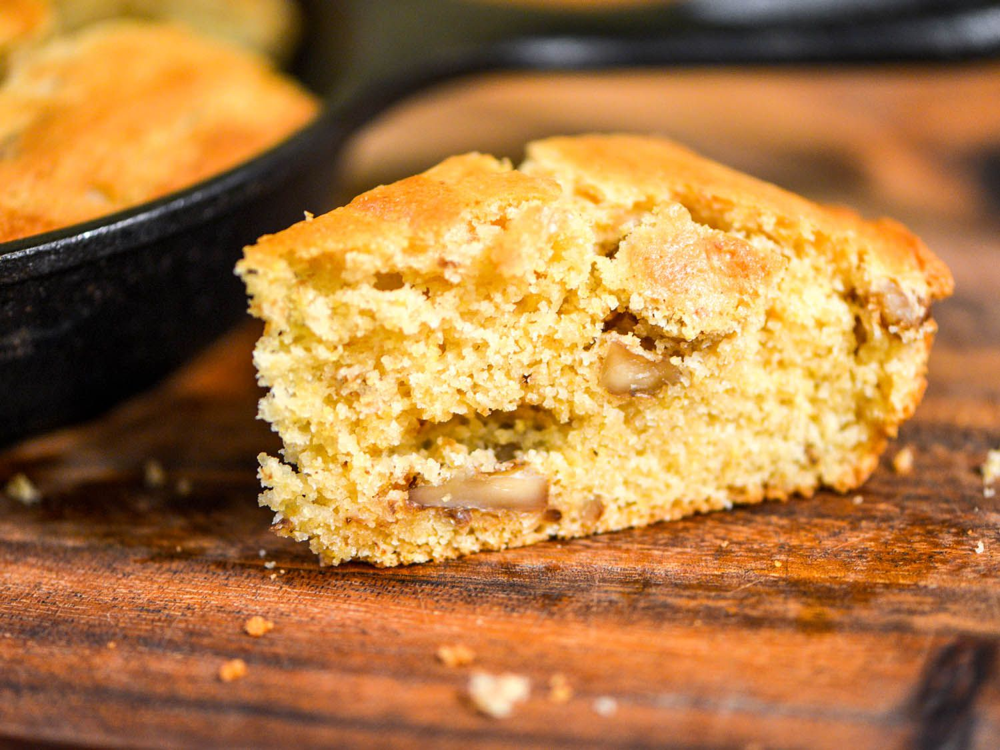

Walnut Cornbread
Ingredients
- 1/4 cup of vegetable oil
- 1/2 cup of milk
- 2 teaspoons of vanilla extract
- 1 cup cornmeal
- 1 cup of cooked corn
- 1 cup of flour
- 1 tablespoon of baking powder
- 1 teaspoon of baking soda
- 1 1/2 cups of chopped walnuts
- 1/2 teaspoon of ground cinnamon
Directions
- Preheat oven to 350oF.
- Put ingredients into a food processor and puree until smooth.
- Put in pan and bake in oven for 45 minutes or until it is brown on top.
- Enjoy!